Nonlinear Regression and Heteroscedasticity
Statistics 516, Homework 2 (Solutions)
You can also download a PDF copy of this homework assignment.
Modeling the Potency of Two Herbicides
The data frame S.alba in the drc
package contains data from an experiment investigating the potency of
two herbicides, bentazone and glyphosate, for use with white mustard.1 The data
are shown in the plot below.
library(ggplot2)
library(drc)
p <- ggplot(S.alba, aes(x = Dose, y = DryMatter)) + theme_minimal() +
geom_count(alpha = 0.25) + facet_wrap(~ Herbicide) +
labs(x = "Dose (g/ha)", y = "Dry Matter (g/pot)") +
theme(legend.position = c(0.95, 0.8))
plot(p)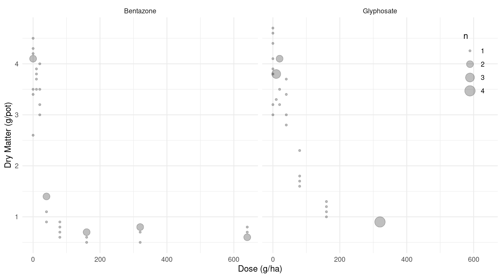
Note the use of geom_count here. It can be used instead of
geom_point to make the size of the points proportional to
the number of points at a given location. Pots of plants were randomly
assigned to receive a specified dose of one of the two herbicides. The
amount of dry matter from each pot was later measured.
Assume that the goal of this study is to assess how the dose of each
of the two herbicides affect dry matter. To do this a nonlinear
regression model can be used with dry matter as the response variable,
and dose and herbicide as the explanatory variables. This model will
have the form \[
E(M) = \gamma + \frac{\delta - \gamma}{1 + e^{\beta(\log d - \log
\alpha)}},
\] where \(M\) and \(d\) are dry matter and dose,
respectively.2 The four parameters of this model (i.e.,
\(\alpha\), \(\beta\), \(\delta\), and \(\gamma\)) have useful interpretations in
terms of how the expected dry matter is related to dose. The parameter
\(\delta\) is the expected dry matter
at zero dose, and \(\gamma\) is the
asymptote of expected dry matter as dose increases. The parameter \(\alpha\) is the dose value where the
expected dry matter is half way between its maximum value of \(\delta\) and its minimum value of \(\gamma\) — i.e., when \(E(M) = (\delta+\gamma)/2\).3 The parameter \(\beta\) is related to “how quickly” the
expected dry matter decreases as dose increases when dose equals \(\alpha\). Specifically, it can be shown
that the slope of a tangent line when dose equals \(\alpha\) is \(-\beta(\delta-\gamma)/(4\alpha)\), so
everything else being equal as \(\beta\) increases the expected dry matter
decreases “more quickly” as dose increases.4 The plot below shows
this model with \(\alpha\) = 20, \(\beta\) = 5, \(\delta\) = 5, and \(\gamma\) = 2.
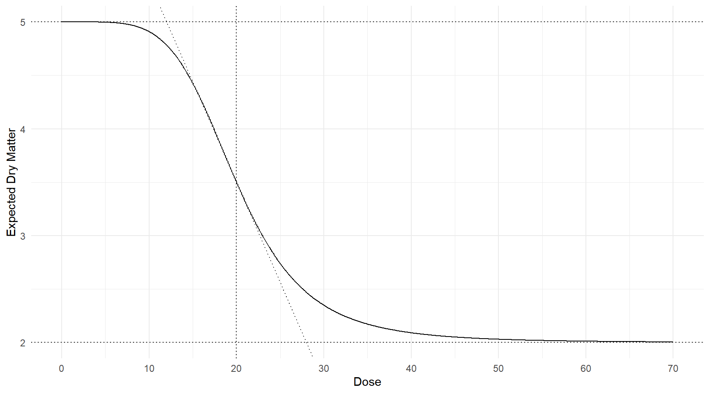
The drc package provides functions the help automate
the estimation of a variety of nonlinear regression models like this one
for dose-response relationships. But here you will consider how to use
the nls function to estimate this model. Being proficient
at using a function like nls is very useful because then
you are not limited to using only those models programmed by other
authors. A feature of the drc package is that it
provides “self-starter” features that find good starting values for you
automatically. But when using nls it is up to you to find
good starting values. Fortunately for this particular model this is not
too difficult. You can relatively easily “eyeball” reasonable starting
values for \(\alpha\), \(\delta\), and \(\gamma\) by looking at a plot of the data.
Finding a good starting value for \(\beta\) can be a bit trickier, but here is
one strategy that can be used. Suppose we compute the mean value of
DryMatter for each combination of Herbicide
and Dose as follows.
library(dplyr)
S.alba %>% group_by(Herbicide, Dose) %>%
summarize(drymatter = mean(DryMatter))# A tibble: 15 x 3
# Groups: Herbicide [2]
Herbicide Dose drymatter
<fct> <int> <dbl>
1 Bentazone 0 3.84
2 Bentazone 10 3.72
3 Bentazone 20 3.42
4 Bentazone 40 1.2
5 Bentazone 80 0.75
6 Bentazone 160 0.625
7 Bentazone 320 0.7
8 Bentazone 640 0.675
9 Glyphosate 0 3.96
10 Glyphosate 10 3.68
11 Glyphosate 20 3.72
12 Glyphosate 40 3.22
13 Glyphosate 80 1.85
14 Glyphosate 160 1.15
15 Glyphosate 320 0.9 We can actually plot these means and connect them with line segments
by “adding” stat_summary to the earlier plot to provide a
very crude approximation to the model as shown below. Note that the
following also “zooms-in” on dose values between 0 and 200.
p <- p + stat_summary(fun = "mean", geom = "line") +
scale_x_continuous(limits = c(0, 200))
plot(p)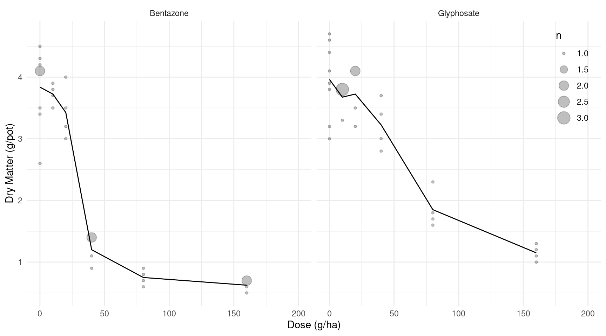 Recall that the slope of the tangent line when dose equals \(\alpha\) is \(-\beta(\delta-\gamma)/(4\alpha)\). We can approximate this slope by computing the slope of the line segment that “contains” what we guess is the value of \(\alpha\). For example, for the bentazone herbicide if we guessed that \(\alpha\) was between 20 and 40 g/ha, then the slope of that line segment (using the means computed above) equals \((1.2 - 3.42)/(40 - 20)\). Thus we might find an approximate value of \(\beta\) to use as a starting value if we solve for \(\beta\) in the equation \[ \frac{1.2-3.42}{40-20} = \frac{-\beta(\delta-\gamma)}{4\alpha}, \] where \(\alpha\), \(\gamma\), and \(\delta\) are replaced the values that you “eyeballed” from the plot of the data to use as starting values. You may find it useful to use this strategy to find a good starting value for \(\beta\) in your models.
Estimate the nonlinear model described above using
nls. In this model assume that the type of herbicide does not matter so your model will simply be \[ E(M_i) = \gamma + \frac{\delta - \gamma}{1 + e^{\beta(\log d_i - \log \alpha)}}, \] where \(M_i\) and \(d_i\) are the \(i\)-th observations of dry matter and dose, respectively. To find your starting values you can make a plot of the data for both herbicides combined by omittingfacet_wrap(~ Herbicide)from the code given earlier to produce a plot of the raw data without accounting for the type of herbicide. And to compute the sample means for each dose but not for each combination of dose usegroup_by(Dose)instead ofgroup_by(Herbicide, Dose)in the code given earlier for computing these means. Give the parameter estimates and their standard errors using thesummaryfunction, and plot the model by adding a smooth curve to the plot to show the estimated expected response as a function of dose. Note that if you add this curve to the original plot then the data frame of predicted values must include the type of herbicide even though it is not part of your model (see the first problem from the in-class exercise with the Michaelis-Menten model).Solution: First I will make a plot of the data combined across the two herbicides as well as producing some summary statistics to help find the starting value of \(\beta\).
p <- ggplot(S.alba, aes(x = Dose, y = DryMatter)) + theme_minimal() + geom_count(alpha = 0.25) + labs(x = "Dose (g/ha)", y = "Dry Matter (g/pot)") + theme(legend.position = c(0.95, 0.8)) plot(p)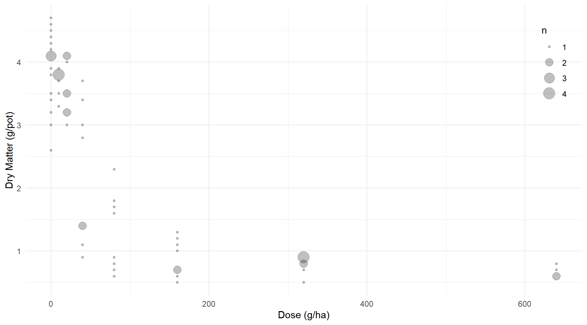
S.alba %>% group_by(Dose) %>% summarize(drymatter = mean(DryMatter))# A tibble: 8 x 2 Dose drymatter <int> <dbl> 1 0 3.9 2 10 3.7 3 20 3.58 4 40 2.21 5 80 1.3 6 160 0.888 7 320 0.8 8 640 0.675Based on this plot I am going to guess starting values of \(\delta\) = 4, \(\gamma\) = 0.5, and \(\alpha\) = 50. Then the starting value of \(\beta\) would be the solution to \[ \frac{1.3 - 2.21}{80 - 40} = \frac{-\beta(4 - 0.5)}{4(50)}, \] which is \[ \beta = -\frac{1.3 - 2.21}{80 - 40} \times \frac{4(50)}{4 - 0.5} = 1.3. \] Now we can estimate the model as follows.
m <- nls(DryMatter ~ gamma + (delta - gamma) / (1 + exp(beta * (log(Dose) - log(alpha)))), data = S.alba, start = list(delta = 4, gamma = 0.5, alpha = 50, beta = 1.3)) summary(m)$coefficientsEstimate Std. Error t value Pr(>|t|) delta 3.8883 0.1233 31.528 1.057e-40 gamma 0.7904 0.1409 5.611 4.633e-07 alpha 39.4534 4.0197 9.815 2.189e-14 beta 2.6165 0.6294 4.157 9.764e-05Here is a plot of the estimated model.
d <- expand.grid(Dose = seq(0, 640, length = 200), Herbicide = c("Bentazone","Glyphosate")) d$yhat <- predict(m, newdata = d) p <- p + geom_line(aes(y = yhat), data = d) plot(p) My starting values were a bit off, but not so much to cause
problems.
My starting values were a bit off, but not so much to cause
problems.Estimate a nonlinear model where the \(\alpha\), \(\beta\), and \(\gamma\) parameters vary by herbicide, but \(\delta\) does not, using the
nlsfunction. This model can be written case-wise as \[ E(M_i) = \begin{cases} \gamma_b + \frac{\delta - \gamma_b}{1 + e^{\beta_b\left(\log d_i - \log \alpha_b\right)}}, & \text{if the herbacide used was bentazone}, \\ \gamma_g + \frac{\delta - \gamma_g}{1 + e^{\beta_g\left(\log d_i - \log \alpha_g\right)}}, & \text{if the herbacide used was glyphosate}. \end{cases} \] The rationale for this model is that when the dose is zero there should be no difference in the expected response as a function of the type of herbicide, so \(\delta\) should not depend on the type of herbicide used. Report the estimates and standard errors of the seven parameters using thesummaryfunction. Also plot this model with the raw data by adding a smooth curve to the first plot shown above to show the estimated expected response as a function of dose and type of herbicide.Solution: We could try to come up with starting values for each herbicide separately. I guessed \(\delta\) = 4, \(\gamma_b = \gamma_g\) = 0.5, \(\alpha_b\) = 30, and \(\alpha_g\) = 70. Solving for \(\beta_b\) and \(\beta_g\) as in the previous problem based on these starting values gives \(\beta_b \approx\) 3.8 and \(\beta_g\) = 2.74. But you could also use the estimates from the previous model as I did below.
library(dplyr) # for case_when function m <- nls(DryMatter ~ case_when( Herbicide == "Bentazone" ~ gamma_b + (delta - gamma_b) / (1 + exp(beta_b * (log(Dose) - log(alpha_b)))), Herbicide == "Glyphosate" ~ gamma_g + (delta - gamma_g) / (1 + exp(beta_g * (log(Dose) - log(alpha_g)))) ), start = list(delta = 3.9, gamma_b = 0.8, gamma_g = 0.8, alpha_b = 39, alpha_g = 39, beta_b = 2.6, beta_g = 2.6), data = S.alba) summary(m)$coefficientsEstimate Std. Error t value Pr(>|t|) delta 3.8424 0.07518 51.108 8.732e-52 gamma_b 0.6810 0.09453 7.204 1.033e-09 gamma_g 0.9038 0.17951 5.035 4.515e-06 alpha_b 28.9821 2.07810 13.946 1.235e-20 alpha_g 62.5509 6.38619 9.795 3.918e-14 beta_b 4.9963 1.00048 4.994 5.253e-06 beta_g 2.8203 0.66661 4.231 7.949e-05Note that this code can get a little tedious. We can simplify it somewhat by (a) creating a function for the model and (b) specifying the starting values outside the function. This is easier to read and debug.
f <- function(x, alpha, beta, delta, gamma) { gamma + (delta - gamma) / (1 + exp(beta * (log(x) - log(alpha)))) } startvalues <- list(delta = 3.9, gamma_b = 0.8, gamma_g = 0.8, alpha_b = 39, alpha_g = 39, beta_b = 2.6, beta_g = 2.6) m <- nls(DryMatter ~ case_when( Herbicide == "Bentazone" ~ f(Dose, alpha_b, beta_b, delta, gamma_b), Herbicide == "Glyphosate" ~ f(Dose, alpha_g, beta_g, delta, gamma_g) ), start = startvalues, data = S.alba) summary(m)$coefficientsEstimate Std. Error t value Pr(>|t|) delta 3.8424 0.07518 51.108 8.732e-52 gamma_b 0.6810 0.09453 7.204 1.033e-09 gamma_g 0.9038 0.17951 5.035 4.515e-06 alpha_b 28.9821 2.07810 13.946 1.235e-20 alpha_g 62.5509 6.38619 9.795 3.918e-14 beta_b 4.9963 1.00048 4.994 5.253e-06 beta_g 2.8203 0.66661 4.231 7.949e-05Here is the plot.
d <- expand.grid(Dose = seq(0, 640, length = 200), Herbicide = c("Bentazone","Glyphosate")) d$yhat <- predict(m, newdata = d) p <- ggplot(S.alba, aes(x = Dose, y = DryMatter)) + theme_minimal() + geom_count(alpha = 0.25) + facet_wrap(~ Herbicide) + geom_line(aes(y = yhat), data = d) + labs(x = "Dose (g/ha)", y = "Dry Matter (g/pot)") + theme(legend.position = c(0.95, 0.8)) plot(p)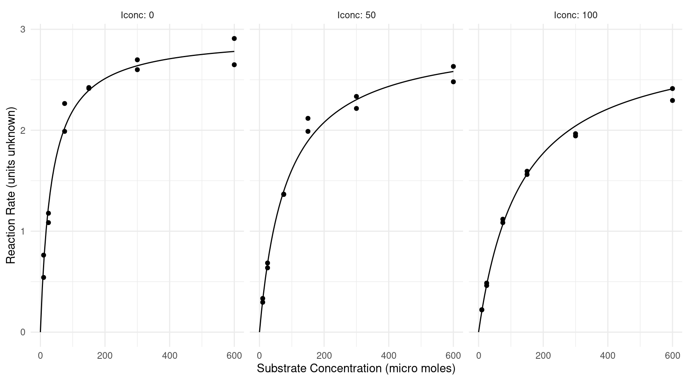
A researcher might like to make inferences about the difference in the \(\alpha\), \(\beta\), and \(\gamma\) parameters between the two herbicides. Use the
linconfunction to produce estimates, standard errors, confidence intervals, and tests concerning \(\alpha_b-\alpha_g\), \(\beta_b-\beta_g\), and \(\gamma_b-\gamma_g\).Solution: Here is how we can make inferences about the differences between the parameters of the two herbicides.
library(trtools) # for lincon lincon(m, a = c(0,0,0,1,-1,0,0)) # alpha_b - alpha_gestimate se lower upper tvalue df pvalue (0,0,0,1,-1,0,0),0 -33.57 6.602 -46.77 -20.37 -5.085 61 3.756e-06lincon(m, a = c(0,0,0,0,0,1,-1)) # beta_b - beta_gestimate se lower upper tvalue df pvalue (0,0,0,0,0,1,-1),0 2.176 1.16 -0.1445 4.496 1.875 61 0.06557lincon(m, a = c(0,1,-1,0,0,0,0)) # gamma_b - gamma_gestimate se lower upper tvalue df pvalue (0,1,-1,0,0,0,0),0 -0.2228 0.2028 -0.6283 0.1826 -1.099 61 0.276The difference between \(\alpha_b\) and \(\alpha_g\) is statistically significant. This parameter would often be the focus of a study like this as it represents the “potency” of the herbicide in a sense by showing how much is necessary to reduce the expected response by half of how much it will be reduced as dose increases. Here bentazone appears to be more potent than glyphosate.
Jevon’s Gold Sovereigns
The data frame jevons in the alr4
package contains summary statistics on the weights of sovereigns
(i.e., British gold coins) that were collected from circulation in
Manchester, England. These data are from a paper by the 19th century
economist and philosopher William
Stanley Jevons.5 This data frame (shown below) gives the
mean and standard deviation of the weights of five samples of sovereigns
that vary by age (in decades).
library(alr4)
jevons Age n Weight SD Min Max
1 1 123 7.973 0.01409 7.900 7.999
2 2 78 7.950 0.02272 7.892 7.993
3 3 32 7.928 0.03426 7.848 7.984
4 4 17 7.896 0.04057 7.827 7.965
5 5 24 7.873 0.05353 7.757 7.961We do not have the original data, so for the purpose of this exercise you will create an artificial data set that produces data with the same sample sizes, means, and standard deviations.6
library(dplyr)
library(tidyr)
set.seed(123)
coins <- jevons %>% uncount(n) %>%
group_by(Age) %>% mutate(y = rnorm(n(), Weight, SD)) %>%
mutate(y = SD * (y - mean(y))/sd(y) + Weight) %>%
dplyr::select(Age, y) %>% rename(Weight = y)We can confirm that these artificial data give the same means and standard deviations as the original data.
coins %>% group_by(Age) %>%
summarize(n = n(), meanweight = mean(Weight), sdweight = sd(Weight))# A tibble: 5 x 4
Age n meanweight sdweight
<int> <int> <dbl> <dbl>
1 1 123 7.97 0.0141
2 2 78 7.95 0.0227
3 3 32 7.93 0.0343
4 4 17 7.90 0.0406
5 5 24 7.87 0.0535The figure below shows a plot of the simulated data.
p <- ggplot(coins, aes(x = factor(Age), y = Weight)) + theme_minimal() +
geom_hline(yintercept = 7.9876) +
geom_hline(yintercept = 7.9379, linetype = 3) +
geom_dotplot(binaxis = "y", binwidth = 0.001, method = "histodot") +
coord_flip() + labs(x = "Age (decades)", y = "Weight (g)")
plot(p)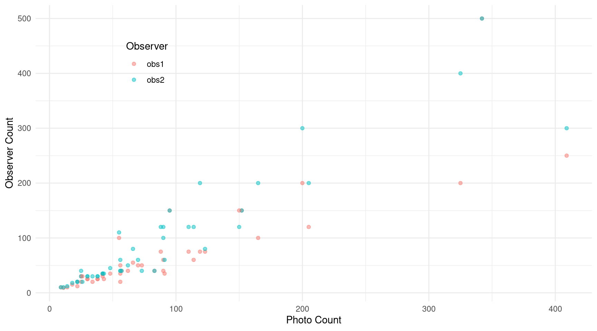 The solid line shows the intended standard weight of newly minted sovereigns (7.9876 g), and the dotted line shows the minimum legal weight (7.9379 g). Perhaps not unsurprisingly it can be seen that, on average, older sovereigns have less weight, presumably due to wear while in circulation. But note also that the variability of weight appears to increase with the age of the coins. This may be due to differences in how much the coins are in circulation. Some coins are frequently being exchanged thus losing more material, whereas others may being exchanged less and thus not losing as much material. In this problem you will consider various ways of dealing with the heteroscedasticity as well as the consequences of failing to account for heteroscedasticity.
Estimate a linear model using the
lmfunction withWeightas the response variable andAgeas the explanatory variable. In your model treat age as a factor (i.e., a categorical variable) and not a quantitative variable. You can do this by either usingfactor(Age)instead ofAgein the model formula, or by creating a new variable such ascoins$Agef <- factor(coins$Age)which will coerce the variable into a factor. Use eithercontrastor functions from the emmeans package to produce estimates, standard errors, and confidence intervals for (a) the expected weight of coins from each age group and (b) the difference in the expected weight between the the newest coins (i.e., age of one decade) and the other four groups of coins.7 For this model you should find that the estimated expected weights are equal the corresponding sample means, and that the estimated differences in the expected weights are equal to the differences in the corresponding sample means.Solution: First here is the model.
m.ols <- lm(Weight ~ factor(Age), data = coins) summary(m.ols)$coefficientsEstimate Std. Error t value Pr(>|t|) (Intercept) 7.9725 0.002413 3304.468 0.000e+00 factor(Age)2 -0.0222 0.003873 -5.732 2.658e-08 factor(Age)3 -0.0449 0.005310 -8.456 1.783e-15 factor(Age)4 -0.0763 0.006924 -11.020 1.491e-23 factor(Age)5 -0.0995 0.005971 -16.664 2.559e-43We can make inferences about the expected weight for each age group as follows.
trtools::contrast(m.ols, a = list(Age = 1:5), cnames = paste("Age", 1:5))estimate se lower upper tvalue df pvalue Age 1 7.973 0.002413 7.968 7.977 3304 269 0 Age 2 7.950 0.003030 7.944 7.956 2624 269 0 Age 3 7.928 0.004730 7.918 7.937 1676 269 0 Age 4 7.896 0.006490 7.883 7.909 1217 269 0 Age 5 7.873 0.005462 7.862 7.884 1441 269 0library(emmeans) emmeans(m.ols, ~Age)Age emmean SE df lower.CL upper.CL 1 7.973 0.002413 269 7.968 7.977 2 7.950 0.003030 269 7.944 7.956 3 7.928 0.004730 269 7.918 7.937 4 7.896 0.006490 269 7.883 7.909 5 7.873 0.005462 269 7.862 7.884 Confidence level used: 0.95And we can make inferences comparing the expected weight for the first decade group with the other four age groups.
trtools::contrast(m.ols, a = list(Age = 1), b = list(Age = 2:5), cnames = c("1-2","1-3","1-4","1-5"))estimate se lower upper tvalue df pvalue 1-2 0.0222 0.003873 0.01457 0.02983 5.732 269 2.658e-08 1-3 0.0449 0.005310 0.03445 0.05535 8.456 269 1.783e-15 1-4 0.0763 0.006924 0.06267 0.08993 11.020 269 1.491e-23 1-5 0.0995 0.005971 0.08774 0.11126 16.664 269 2.559e-43emmeans::contrast(emmeans(m.ols, ~ Age), method = "trt.vs.ctrl", ref = 1, adjust = "none", reverse = TRUE, infer = TRUE)contrast estimate SE df lower.CL upper.CL t.ratio p.value 1 - 2 0.0222 0.00387 269 0.0146 0.0298 5.732 <.0001 1 - 3 0.0449 0.00531 269 0.0345 0.0554 8.456 <.0001 1 - 4 0.0763 0.00692 269 0.0627 0.0899 11.020 <.0001 1 - 5 0.0995 0.00597 269 0.0877 0.1113 16.664 <.0001 Confidence level used: 0.95Assume that the variances vary by decade so that \[ Y_i = \begin{cases} \sigma_1^2, & \text{if the $i$-th observation is of a coin one decade old}, \\ \sigma_2^2, & \text{if the $i$-th observation is of a coin two decades old}, \\ \sigma_3^2, & \text{if the $i$-th observation is of a coin three decades old}, \\ \sigma_4^2, & \text{if the $i$-th observation is of a coin four decades old}, \\ \sigma_5^2, & \text{if the $i$-th observation is of a coin five decades old}. \end{cases} \] There are a couple of different ways to account for this kind of variance structure. One is to use weighted least squares where the weights are estimated as the reciprocals of the sample variances. We discussed how to compute these weights using functions from the dplyr package. Another approach is to use a parametric model where the five variances are effectively estimated from the data. We discussed how to do this with using the
glsfunction from the nlme package. Use both of these approaches and for each show the parameter estimates and their standard errors as given bysummary, and use either thecontrastfunction or functions from the emmeans package to produce estimates, standard errors, and confidence intervals for (a) the expected weight of coins from each age group and (b) the difference in the expected weight between the the newest coins, just as you did in the previous problem.8Solution: For the weighted leasts squares approach we first compute the weights using the sample variances and add them to the data frame.
library(dplyr) coins <- coins %>% group_by(Age) %>% mutate(w = 1 / var(Weight))Next we use weighted least squares.
m.wls <- lm(Weight ~ factor(Age), weights = w, data = coins) summary(m.wls)$coefficientsEstimate Std. Error t value Pr(>|t|) (Intercept) 7.9725 0.001270 6275.323 0.000e+00 factor(Age)2 -0.0222 0.002869 -7.738 2.050e-13 factor(Age)3 -0.0449 0.006188 -7.256 4.277e-12 factor(Age)4 -0.0763 0.009921 -7.690 2.772e-13 factor(Age)5 -0.0995 0.011000 -9.045 3.065e-17Next I will produce the inferences for the expected weight for each age group and the differences in the expected weights between the first decade and later age groups. Here I will only use functions from the emmeans package, but the
contrastfunction from the trtools package would produce the same results.emmeans(m.wls, ~ Age)Age emmean SE df lower.CL upper.CL 1 7.972 0.001270 269 7.970 7.975 2 7.950 0.002573 269 7.945 7.955 3 7.928 0.006056 269 7.916 7.940 4 7.896 0.009840 269 7.877 7.916 5 7.873 0.010927 269 7.851 7.895 Confidence level used: 0.95emmeans::contrast(emmeans(m.wls, ~ Age), method = "trt.vs.ctrl", ref = 1, adjust = "none", reverse = TRUE, infer = TRUE)contrast estimate SE df lower.CL upper.CL t.ratio p.value 1 - 2 0.0222 0.00287 269 0.0165 0.0278 7.738 <.0001 1 - 3 0.0449 0.00619 269 0.0327 0.0571 7.256 <.0001 1 - 4 0.0763 0.00992 269 0.0568 0.0958 7.690 <.0001 1 - 5 0.0995 0.01100 269 0.0778 0.1212 9.045 <.0001 Confidence level used: 0.95Now I will estimate the parametric model.
library(nlme) m.gls <- gls(Weight ~ factor(Age), data = coins, method = "ML", weights = varIdent(form = ~ 1 | Age)) summary(m.gls)Generalized least squares fit by maximum likelihood Model: Weight ~ factor(Age) Data: coins AIC BIC logLik -1312 -1276 665.9 Variance function: Structure: Different standard deviations per stratum Formula: ~1 | Age Parameter estimates: 1 2 3 4 5 1.000 1.609 2.403 2.805 3.734 Coefficients: Value Std.Error t-value p-value (Intercept) 7.972 0.001277 6243 0 factor(Age)2 -0.022 0.002878 -8 0 factor(Age)3 -0.045 0.006150 -7 0 factor(Age)4 -0.076 0.009718 -8 0 factor(Age)5 -0.099 0.010871 -9 0 Correlation: (Intr) fc(A)2 fc(A)3 fc(A)4 factor(Age)2 -0.444 factor(Age)3 -0.208 0.092 factor(Age)4 -0.131 0.058 0.027 factor(Age)5 -0.117 0.052 0.024 0.015 Standardized residuals: Min Q1 Med Q3 Max -2.61356 -0.66557 -0.09847 0.64688 3.09641 Residual standard error: 0.01403 Degrees of freedom: 274 total; 269 residualHere are the inferences about the expected weights for each age group and comparing the age groups with the first.
emmeans(m.gls, ~ Age)Age emmean SE df lower.CL upper.CL 1 7.972 0.001277 121.20 7.970 7.975 2 7.950 0.002580 78.09 7.945 7.955 3 7.928 0.006016 33.64 7.915 7.940 4 7.896 0.009634 17.49 7.876 7.916 5 7.873 0.010796 24.78 7.851 7.895 Degrees-of-freedom method: satterthwaite Confidence level used: 0.95emmeans::contrast(emmeans(m.gls, ~ Age), method = "trt.vs.ctrl", ref = 1, adjust = "none", reverse = TRUE, infer = TRUE)contrast estimate SE df lower.CL upper.CL t.ratio p.value 1 - 2 0.0222 0.00288 117.1 0.0165 0.0279 7.713 <.0001 1 - 3 0.0449 0.00615 36.7 0.0324 0.0574 7.301 <.0001 1 - 4 0.0763 0.00972 18.1 0.0559 0.0967 7.851 <.0001 1 - 5 0.0995 0.01087 25.5 0.0771 0.1219 9.153 <.0001 Degrees-of-freedom method: satterthwaite Confidence level used: 0.95Compare the estimates and standard errors for estimating the model parameters as well as the expected weight and differences in expected weight when accounting for heteroscedasticity as you did in the last problem, and when not accounting for heteroscedasticity as you did in the first problem. Discuss briefly how failing to account heteroscedasticity (i.e., incorrectly assuming homoscedasticity) may affect your inferences.
Solution: You should see that the estimates of the parameters (and thus the expected weights and their differences) are the same whether we use ordinary (i.e., unweighted) least squares, weighted least squares, or a parametric model. It is important to note that this is not always the case. Using weights or a parametric model may produce different parameter estimates. It depends on the model. The standard errors, however, are affected by if we account for heteroscedasticity. Perhaps the most useful comparison is to look at the estimates of the expected weights and their differences. First consider the estimates of the expected weights.
emmeans(m.ols, ~ Age)Age emmean SE df lower.CL upper.CL 1 7.973 0.002413 269 7.968 7.977 2 7.950 0.003030 269 7.944 7.956 3 7.928 0.004730 269 7.918 7.937 4 7.896 0.006490 269 7.883 7.909 5 7.873 0.005462 269 7.862 7.884 Confidence level used: 0.95emmeans(m.wls, ~ Age)Age emmean SE df lower.CL upper.CL 1 7.972 0.001270 269 7.970 7.975 2 7.950 0.002573 269 7.945 7.955 3 7.928 0.006056 269 7.916 7.940 4 7.896 0.009840 269 7.877 7.916 5 7.873 0.010927 269 7.851 7.895 Confidence level used: 0.95emmeans(m.gls, ~ Age)Age emmean SE df lower.CL upper.CL 1 7.972 0.001277 121.20 7.970 7.975 2 7.950 0.002580 78.09 7.945 7.955 3 7.928 0.006016 33.64 7.915 7.940 4 7.896 0.009634 17.49 7.876 7.916 5 7.873 0.010796 24.78 7.851 7.895 Degrees-of-freedom method: satterthwaite Confidence level used: 0.95Note that the standard errors when using the weighted least squares and parametric model are fairly similar, but more dissimilar to those when we do not account for the heteroscedasticity when using ordinary least squares. The standard errors of the expected counts are larger for older coins when accounting for the heteroscedasticity. The standard error for the five decade group is nearly ten times that of the one decade group when accounting for heteroscedasticity, but only about twice as much when not accounting for heteroscedasticity. Now consider the estimates of the differences in the expected weights.
emmeans::contrast(emmeans(m.ols, ~ Age), method = "trt.vs.ctrl", ref = 1, adjust = "none", reverse = TRUE, infer = TRUE)contrast estimate SE df lower.CL upper.CL t.ratio p.value 1 - 2 0.0222 0.00387 269 0.0146 0.0298 5.732 <.0001 1 - 3 0.0449 0.00531 269 0.0345 0.0554 8.456 <.0001 1 - 4 0.0763 0.00692 269 0.0627 0.0899 11.020 <.0001 1 - 5 0.0995 0.00597 269 0.0877 0.1113 16.664 <.0001 Confidence level used: 0.95emmeans::contrast(emmeans(m.wls, ~ Age), method = "trt.vs.ctrl", ref = 1, adjust = "none", reverse = TRUE, infer = TRUE)contrast estimate SE df lower.CL upper.CL t.ratio p.value 1 - 2 0.0222 0.00287 269 0.0165 0.0278 7.738 <.0001 1 - 3 0.0449 0.00619 269 0.0327 0.0571 7.256 <.0001 1 - 4 0.0763 0.00992 269 0.0568 0.0958 7.690 <.0001 1 - 5 0.0995 0.01100 269 0.0778 0.1212 9.045 <.0001 Confidence level used: 0.95emmeans::contrast(emmeans(m.gls, ~ Age), method = "trt.vs.ctrl", ref = 1, adjust = "none", reverse = TRUE, infer = TRUE)contrast estimate SE df lower.CL upper.CL t.ratio p.value 1 - 2 0.0222 0.00288 117.1 0.0165 0.0279 7.713 <.0001 1 - 3 0.0449 0.00615 36.7 0.0324 0.0574 7.301 <.0001 1 - 4 0.0763 0.00972 18.1 0.0559 0.0967 7.851 <.0001 1 - 5 0.0995 0.01087 25.5 0.0771 0.1219 9.153 <.0001 Degrees-of-freedom method: satterthwaite Confidence level used: 0.95Note that with the exception of the second decade, the standard errors for the difference in the expected weight for each later decade and the first decade are larger when accounting for heteroscedasticity. Overall we should be concerned about overestimating or underestimating standard errors when failing to account for heteroscedasticity. Whether that makes and qualitative differences in our inferences depends on the situation, however. Here the changes in the confidence intervals and tests are not very dramatic, but they could be in other cases.
Mortality of Confused Flour Beetles from Carbon Disulphide
The data frame bliss in the trtools
package are from an experiment investigating the effect of gaseous
carbon disulphide (\(\text{CS}_2\)) on
the mortality of confused
flour beetles (Tribolium confusum).9 Cloth cages of batches
of approximately thirty beetles were suspended in a flask above a fixed
volume of liquid carbon disulphide. The number of dead beetles after
five hours of exposure was recorded. The figure below shows the
proportion of dead beetles by concentration of carbon disulphide. Note
that there are two observations for each dose.
library(trtools)
library(ggplot2)
library(ggrepel)
bliss$proportion <- paste(bliss$dead, "/", bliss$exposed, sep = "")
p <- ggplot(bliss, aes(x = concentration, y = dead/exposed)) +
geom_point() + ylim(0, 1) + theme_minimal() +
geom_label_repel(aes(label = proportion), box.padding = 0.75) +
labs(x = "Concentration of Carbon Disulphide (mg/liter)",
y = "Proportion of Beetles Dying")
plot(p)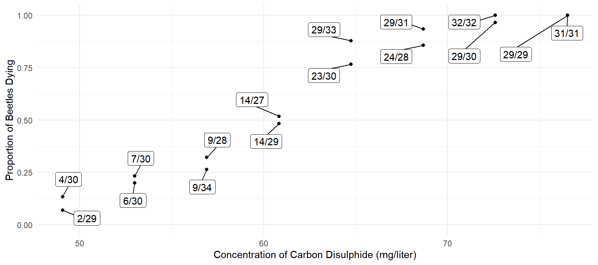 A naive approach to modeling these data would be to use linear regression where the proportion is the response variable.
m <- lm(dead/exposed ~ concentration, data = bliss)
cbind(summary(m)$coefficients, confint(m)) Estimate Std. Error t value Pr(>|t|) 2.5 % 97.5 %
(Intercept) -1.73277 0.159636 -10.85 3.352e-08 -2.07515 -1.39038
concentration 0.03717 0.002516 14.77 6.225e-10 0.03178 0.04257d <- data.frame(concentration = seq(49.06, 76.54, length = 100))
d$yhat <- predict(m, newdata = d)
p <- ggplot(bliss, aes(x = concentration, y = dead/exposed)) +
geom_line(aes(y = yhat), data = d) +
geom_point() + ylim(0, 1) + theme_minimal() +
geom_label_repel(aes(label = proportion), box.padding = 0.75) +
labs(x = "Concentration of Carbon Disulphide (mg/liter)",
y = "Proportion of Beetles Dying")
plot(p) This model is probably not adequate for two reasons. One is that the
relationship between the expected of dead beetles and concentration is
probably not linear. Secondly, proportions tend to exhibit
heteroscedasticity where the variance of a proportion tends to decrease
as its expected value gets farther from 0.5. As we will discuss in
lecture, if the number of dead beetles has a binomial
distribution, then it can be shown that \[
\text{Var}(P) = E(P)[1-E(P)]/m,
\] where \(P\) is the proportion
(i.e.,
This model is probably not adequate for two reasons. One is that the
relationship between the expected of dead beetles and concentration is
probably not linear. Secondly, proportions tend to exhibit
heteroscedasticity where the variance of a proportion tends to decrease
as its expected value gets farther from 0.5. As we will discuss in
lecture, if the number of dead beetles has a binomial
distribution, then it can be shown that \[
\text{Var}(P) = E(P)[1-E(P)]/m,
\] where \(P\) is the proportion
(i.e., dead/exposed) and \(m\) is the denominator of the proportion
(i.e., exposed). This implies that the variance of \(P\) decreases as \(E(P)\) gets farther from 0.5, and also
decreases as \(m\) increases.
These data will be used in lecture to demonstrate logistic regression, but for this problem you will consider modeling the data using nonlinear regression. Later we will also discuss the relationship between logistic and nonlinear regression.
Consider the nonlinear regression model \[ E(P_i) = \frac{1}{1 + e^{-\beta_0 - \beta_1d_i}}, \] where \(P_i\) and \(d_i\) are the \(i\)-th observations of the proportion of dead beetles (i.e.,
dead/exposed) and the concentration, respectively.10 Use thenlsfunction to estimate this nonlinear regression model. For starting values you can cheat and use the parameter estimates from a logistic regression model estimated as followed.m <- glm(cbind(dead, exposed - dead) ~ concentration, family = binomial, data = bliss) summary(m)$coefficientsEstimate Std. Error z value Pr(>|z|) (Intercept) -14.8084 1.28976 -11.48 1.633e-30 concentration 0.2492 0.02138 11.65 2.250e-31The two estimates reported above are estimates of \(\beta_0\) and \(\beta_1\) from the logistic regression model. You can use these as your starting values for
nls. The estimates you obtain using nonlinear regression should be similar but not necessarily equal to those shown above. Report the parameter estimates and their standard errors by showing the output fromsummary. Also plot the estimated model by adding a curve to the plot shown above.11Solution: We can estimate the nonlinear model as follows.
m <- nls(dead/exposed ~ 1 / (1 + exp(-b0 - b1 * concentration)), data = bliss, start = list(b0 = -14.5, b1 = 0.25)) summary(m)$coefficientsEstimate Std. Error t value Pr(>|t|) b0 -14.5774 1.22178 -11.93 1.007e-08 b1 0.2434 0.02032 11.98 9.570e-09Here is a plot of the estimated model.
d <- data.frame(concentration = seq(49.06, 76.54, length = 100)) d$yhat <- predict(m, newdata = d) p <- ggplot(bliss, aes(x = concentration, y = dead/exposed)) + geom_line(aes(y = yhat), data = d) + geom_point() + ylim(0, 1) + theme_minimal() + geom_label_repel(aes(label = proportion), box.padding = 0.75) + labs(x = "Concentration of Carbon Disulphide (mg/liter)", y = "Proportion of Beetles Dying") plot(p)
As described above, the number of dead beetles has a binomial distribution then the variance of \(P_i\) is \[ \text{Var}(P_i) = E(P_i)[1-E(P_i)]/m_i, \] where \(m_i\) is the number of exposed beetles for the \(i\)-th observation. Since \(E(P_i)\) is unknown it can be estimated as the predicted value \(\hat{Y_i}\). Use an iteratively weighted least squares algorithm with weights implied by the variance above to estimate the nonlinear model shown above and show the parameter estimates and standard errors using
summary. You should find that the parameter estimates will be equal to or very close to those obtained using theglmfunction above, but the standard errors will be somewhat different.Solution: Here is how to estimate the same model but using iteratively weighted least squares.
bliss$w <- 1 for (i in 1:10) { m <- nls(dead/exposed ~ 1 / (1 + exp(-b0 - b1 * concentration)), data = bliss, start = list(b0 = -14.5, b1 = 0.25), weights = w) bliss$yhat <- predict(m) bliss$w <- bliss$exposed / (bliss$yhat * (1 - bliss$yhat)) } summary(m)$coefficientsEstimate Std. Error t value Pr(>|t|) b0 -14.8084 1.13489 -13.05 3.169e-09 b1 0.2492 0.01882 13.24 2.617e-09The parameter estimates are indeed identical to what we obtain when using logistic regression, but the standard errors are different. Later in the course we will see that the approach used here is equivalent to what is know as a quasi-likelihood approach.
Estimating Bias in Field Measurements in Defects in the Alaska Pipeline
The data frame pipeline in the alr4
package is from a study of the bias of field measurements of defects in
the Alaska
pipeline. That data includes field and laboratory measurements of
the number of defects in observational units from the pipeline.12
p <- ggplot(pipeline, aes(x = Lab, y = Field)) + theme_minimal() +
geom_abline(intercept = 0, slope = 1, linetype = 3) + geom_point() +
labs(x = "Laboratory Measurement", y = "Field Measurement")
plot(p)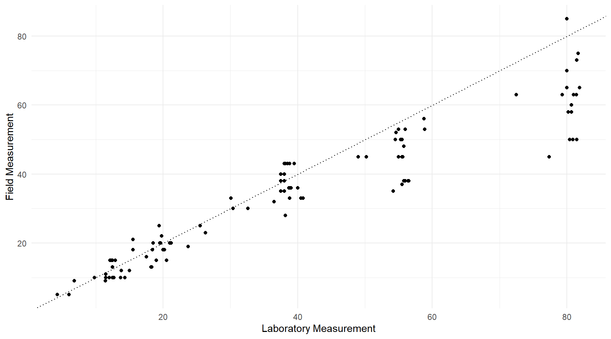 Assume that the laboratory measurements are very accurate and can be treated as the “true” number of defects. Field measurements are faster and cheaper than laboratory measurements, but are more prone to measurement error (both systematic error or bias, and random measurement error). The figure above suggests that the field measurements tend to underestimate the number of defects, particularly as the actual number of defects (as shown by the laboratory measurement) increases. A regression model can be used to estimate the bias of the field measurements so that they can be adjusted appropriately (a process sometimes called calibration). In this problem you will use linear and nonlinear regression to estimate a calibration model.
Let \(F_i\) and \(L_i\) denote the field and laboratory measurements, respectively, for the \(i\)-th observation. If we assume that \(L_i\) is the true number of defects in the \(i\)-th observational unit, then the bias is the expected difference between \(F_i\) and \(L_i\) which is \(E(F_i - L_i)\). The figures suggests that the bias tends to increase as \(L_i\) increases, so one possible model might be that the bias is proportional to \(L_i\). This can be written as \[ E(F_i - L_i) = \theta L_i, \] where \(\theta\) is the constant of proportionality. If \(\theta < 0\) then the field measurements tend to underestimate the number of defects by \((1 - \theta)100\)% (assuming that \(\theta > 0\)), and if \(\theta > 0\) then the field measurements tend to overestimate the number of defects by \((\theta - 1)100\)%. The model shown above is linear so it can be estimated using
lm. There are several ways to do this. One is to use \(F_i - L_i\) as the response variable and estimate a model with \(L_i\) as the explanatory variable but without a constant term (i.e., “intercept”).13 A second approach is to write the model as \[ E(F_i) = L_i + \theta L_i \] if we regard \(L_i\) as a fixed and not random variable so that \(E(F_i - L_i) = E(F_i) - L_i\).14 This model is a special case of the linear model \[ E(F_i) = \beta_0 + \beta_1x_{i1} + \beta_2x_{i2}, \] where \(\beta_0\) = 0, \(\beta_1\) = 1, \(\beta_2 = \theta\), and \(x_{i1} = x_{i2} = L_i\). This model is a little strange in that we have two explanatory variables that are the same variable, but \(\beta_1\) is not estimated but instead is fixed at one. This can be done by specifying an offset in your model (see footnote).15 One last approach is to write the model as \[ E(F_i) = \gamma L_i \] where \(\gamma = 1 + \theta\) since \[ E(F_i) = L_i + \theta L_i = (1 + \theta)L_i = \gamma L_i. \] Estimate the three models described above in the way described and show the estimate and standard error of the model parameter (i.e., \(\theta\) or \(\gamma\)) usingsummary. The first two models should give you the same estimate and standard error of \(\theta\), and the last model should give you an estimate of \(\gamma\) that equals the estimate of \(1 + \theta\) from the previous models.Solution: Here is how to estimate the first model.
m <- lm(Field - Lab ~ -1 + Lab, data = pipeline) summary(m)$coefficientsEstimate Std. Error t value Pr(>|t|) Lab -0.176 0.01391 -12.66 6.337e-23Here is how to estimate the second model.
m <- lm(Field ~ -1 + offset(Lab) + Lab, data = pipeline) summary(m)$coefficientsEstimate Std. Error t value Pr(>|t|) Lab -0.176 0.01391 -12.66 6.337e-23And here is how to estimate the third model.
m <- lm(Field ~ -1 + Lab, data = pipeline) summary(m)$coefficientsEstimate Std. Error t value Pr(>|t|) Lab 0.824 0.01391 59.25 4.392e-83Note that the first two models give the same inferences for \(\theta\) (which is \(\beta_1\) in the notation of a linear model). In the third model the estimated value of \(\gamma\) equals \(1 + \theta\) which we can also see by using
lincon.trtools::lincon(m, a = 1, b = -1)estimate se lower upper tvalue df pvalue (1),-1 -0.176 0.01391 -0.2036 -0.1484 -12.66 106 6.337e-23Of course, you can also see this by simply subtracting one from the estimate of \(\gamma\).
Plot the model you estimated in the previous problem with the raw data to show a plot like that given earlier but with a line showing the estimated expected field measurement as a linear function of laboratory measurement. You will want to use either the second or third model you estimated in the previous problem to do this since the first model uses the difference in the field and laboratory measurements as the response variable and so the predicted values from that model are not what you want for plotting purposes.
Solution: Here is a plot of the second model. I will just include code to “add” the line to the earlier plot.
m <- lm(Field ~ -1 + offset(Lab) + Lab, data = pipeline) d <- data.frame(Lab = c(0,82)) d$yhat <- predict(m, newdata = d) p <- p + geom_line(aes(y = yhat), data = d) plot(p)
Plot the studentized residuals against the predicted values using either the second or third model you estimated in the first problem. Do you think that the expected field measurement is a linear function of the laboratory measurement? Why or why not? Is there any evidence of heteroscedasticity? Why or why not?
Solution: Here is my residual plot (fancier than necessary).
d <- data.frame(x = predict(m), y = rstudent(m)) p <- ggplot(d, aes(x = x, y = y)) + theme_minimal() + geom_point() + labs(x = "Predicted Value", y = "Studentized Residual") plot(p) There does appear to be some evidence of heteroscedasticity due to the
“megaphone” pattern in the residuals. There is also some evidence of
non-linearity, although it is more subtle. Notice how the residuals for
lower predicted values tend to be greater than zero.
There does appear to be some evidence of heteroscedasticity due to the
“megaphone” pattern in the residuals. There is also some evidence of
non-linearity, although it is more subtle. Notice how the residuals for
lower predicted values tend to be greater than zero.Consider an alternative nonlinear model where \[ E(F_i) = L_i + \theta_1 L_i^{\theta_2}. \] This implies that the bias of the field measurements is proportional to some power \(\theta_2\) of the laboratory measurements. Note that the second model you estimated in the first problem is a special case of this model where \(\theta_2\) = 1. Estimate the model above using
nls. For your starting values you can use the estimate of \(\theta_1\) you obtained in the first problem and \(\theta_2\) = 1, since that was the value you implicitly used for those models which can be viewed as an approximation to the model above. Show the parameter estimates and their standard errors usingsummary, and plot the model as a curve with the raw data like you did in the second problem.Solution: The nonlinear model can be estimated as follows.
m <- nls(Field ~ Lab + theta1 * Lab^theta2, data = pipeline, start = list(theta1 = -0.18, theta2 = 1)) summary(m)$coefficientsEstimate Std. Error t value Pr(>|t|) theta1 -0.000521 0.0007712 -0.6756 5.008e-01 theta2 2.396756 0.3435804 6.9758 2.814e-10Here is a fresh plot with the this estimated model.
d <- data.frame(Lab = seq(0, 82)) d$yhat <- predict(m, newdata = d) p <- ggplot(pipeline, aes(x = Lab, y = Field)) + theme_minimal() + geom_abline(intercept = 0, slope = 1, linetype = 3) + geom_point() + geom_line(aes(y = yhat), data = d) + labs(x = "Laboratory Measurement", y = "Field Measurement") plot(p)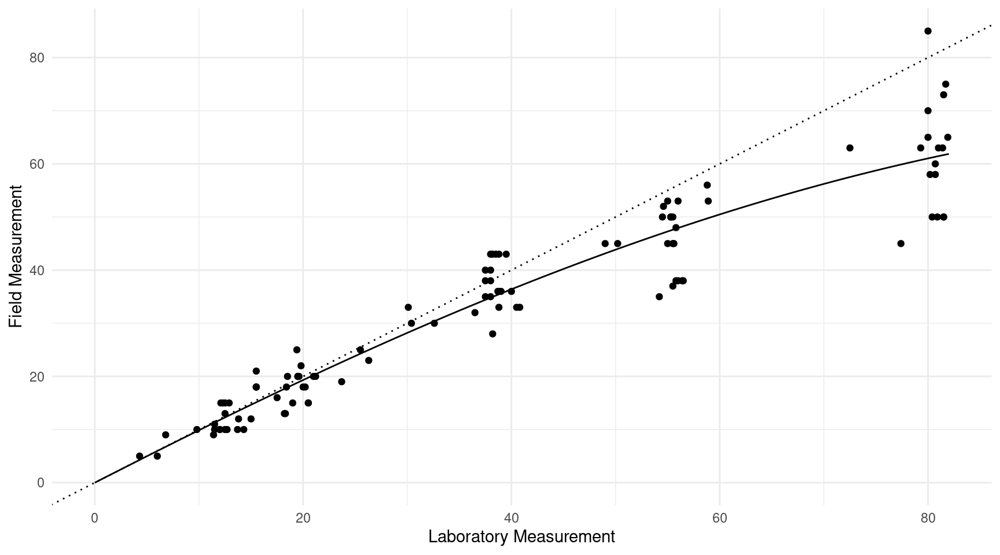
Plot the standardized residuals against the predicted values based on the nonlinear model you estimated in the previous problem. You cannot use
rstandardorrstudentwith anlsobject, but you can use thenlsintfunction from the trtools package to produce standardized residuals. The syntax for a basic plot would something like the following wheremis your model object created usingnls.d <- nlsint(m, residuals = TRUE) plot(d$fit, d$res)Now consider accounting for any heteroscedasticty in the data by assuming that the variance of the field measurements is proportional to some power \(p\) of the expected field measurement so that
\[ \text{Var}(F_i) \propto E(Y_i)^p. \] Use an iteratively weighted least squares algorithm to estimate the nonlinear model described in the previous problem for several values of \(p\), starting with \(p\) = 1 and trying increasingly larger values of increments of 0.5 up to \(p\) = 3. Using residual plots, decide on what you think is a good value of \(p\) and then show the parameter estimates with standard errors for that model usingsummaryand give another plot of the residuals against the predicted values for that model. Also discuss briefly why you selected that particular value of \(p\).16Solution: First here is the residual plot for the model estimated in the previous problem. As usual I will put more effort into the plot than is necessary. You could simply use the code I gave above.
library(trtools) d <- nlsint(m, residuals = TRUE) d <- data.frame(x = d$fit, y = d$res) p <- ggplot(d, aes(x = x, y = y)) + theme_minimal() + geom_point() + labs(x = "Predicted Value", y = "Studentized Residual") plot(p)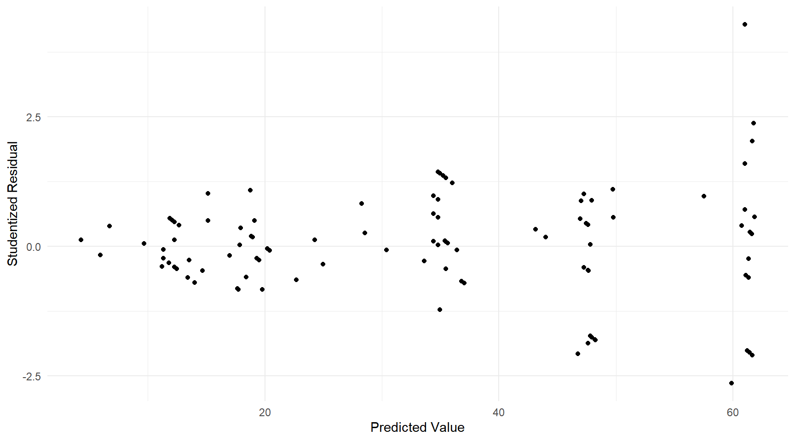 The apparent non-linearity appears to be resolved by this model, but heteroscedasticity is still an issue. Next I will try different variance structures with iteratively least squares to see if this can be resolved.
pipeline$w <- 1 for (i in 1:10) { m <- nls(Field ~ Lab + theta1 * Lab^theta2, weights = w, data = pipeline, start = list(theta1 = -0.18, theta2 = 1)) pipeline$w <- 1 / predict(m) } d <- nlsint(m, residuals = TRUE) d <- data.frame(x = d$fit, y = d$res) p <- ggplot(d, aes(x = x, y = y)) + theme_minimal() + geom_point() + labs(x = "Predicted Value", y = "Studentized Residual") + ggtitle("p = 1") plot(p)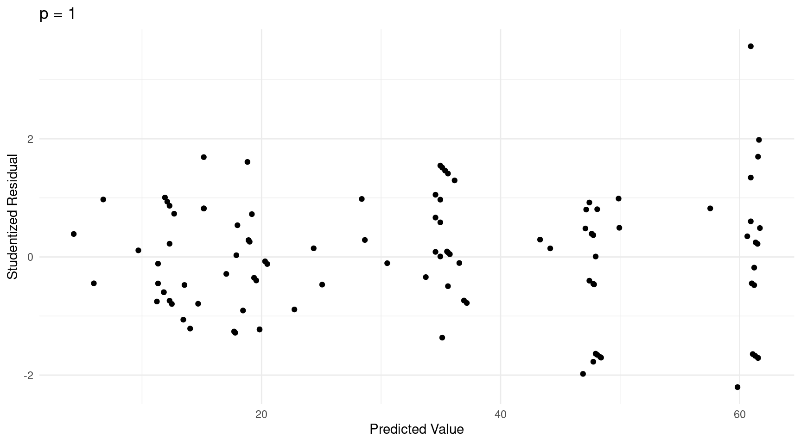
for (i in 1:10) { m <- nls(Field ~ Lab + theta1 * Lab^theta2, weights = w, data = pipeline, start = list(theta1 = -0.18, theta2 = 1)) pipeline$w <- 1 / predict(m)^1.5 } d <- nlsint(m, residuals = TRUE) d <- data.frame(x = d$fit, y = d$res) p <- ggplot(d, aes(x = x, y = y)) + theme_minimal() + geom_point() + labs(x = "Predicted Value", y = "Studentized Residual") + ggtitle("p = 1.5") plot(p)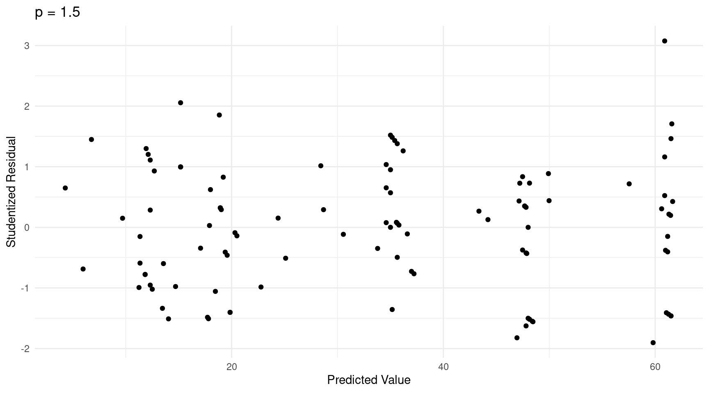
for (i in 1:10) { m <- nls(Field ~ Lab + theta1 * Lab^theta2, weights = w, data = pipeline, start = list(theta1 = -0.18, theta2 = 1)) pipeline$w <- 1 / predict(m)^2 } d <- nlsint(m, residuals = TRUE) d <- data.frame(x = d$fit, y = d$res) p <- ggplot(d, aes(x = x, y = y)) + theme_minimal() + geom_point() + labs(x = "Predicted Value", y = "Studentized Residual") + ggtitle("p = 2") plot(p)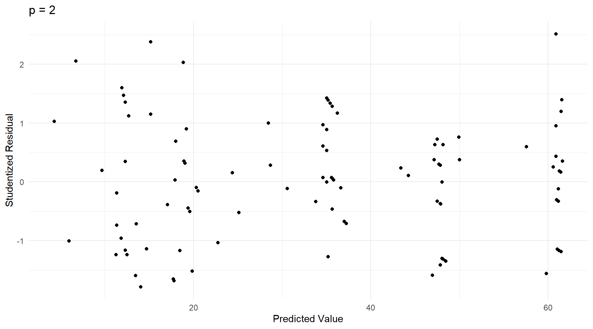
for (i in 1:10) { m <- nls(Field ~ Lab + theta1 * Lab^theta2, weights = w, data = pipeline, start = list(theta1 = -0.18, theta2 = 1)) pipeline$w <- 1 / predict(m)^2.5 } d <- nlsint(m, residuals = TRUE) d <- data.frame(x = d$fit, y = d$res) p <- ggplot(d, aes(x = x, y = y)) + theme_minimal() + geom_point() + labs(x = "Predicted Value", y = "Studentized Residual") + ggtitle("p = 2.5") plot(p)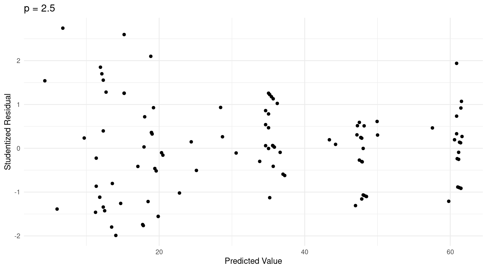
for (i in 1:10) { m <- nls(Field ~ Lab + theta1 * Lab^theta2, weights = w, data = pipeline, start = list(theta1 = -0.18, theta2 = 1)) pipeline$w <- 1 / predict(m)^3 } d <- nlsint(m, residuals = TRUE) d <- data.frame(x = d$fit, y = d$res) p <- ggplot(d, aes(x = x, y = y)) + theme_minimal() + geom_point() + labs(x = "Predicted Value", y = "Studentized Residual") + ggtitle("p = 3") plot(p)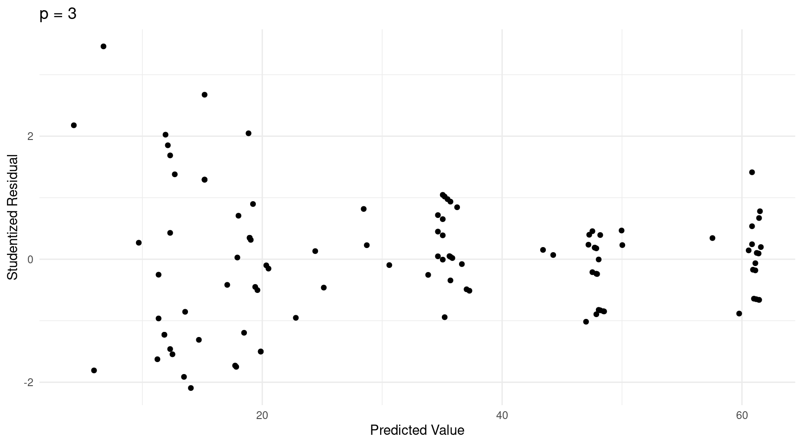 It is a judgment call, but I would pick \(p\) = 1.5 as it appears to make the variability of the standardized residuals the most constant. Here are the inferences for that model.
for (i in 1:10) { m <- nls(Field ~ Lab + theta1 * Lab^theta2, weights = w, data = pipeline, start = list(theta1 = -0.18, theta2 = 1)) pipeline$w <- 1 / predict(m)^1.5 } summary(m)$coefficientsEstimate Std. Error t value Pr(>|t|) theta1 -0.000353 0.0005442 -0.6488 5.179e-01 theta2 2.487143 0.3608460 6.8925 4.215e-10
Anti-Inflammatory Hormone Devices — Revisited
Note: This problem is extra credit for students in Stat 436, but is required for students in Stat 516.
The nls function computationally works very similarly to
the lm function, but the interface is different. The
lm function allows us to specify a model
symbolically via the model formula (i.e., the first argument to
lm), whereas nls requires us to specify the
model mathematically. The nls function can be used
to estimate a linear model. In practice, this is rarely necessary except
maybe in cases where you are using a fairly unusual parameterization of
a linear model that is difficult to express using the model formula
argument to lm. But I think it can be a useful exercise for
the student to use nls to specify a linear model. In this
problem you will use the nls function to replicate several
models for the hormone data from the
bootstrap package that were featured in the last
homework assignment.
In the following you are to estimate the model specified with
lm by using nls. To do this I would recommend
that you “decipher” the model from the output of summary
given below, and then write the model case-wise. I would also suggest
you use either the case_when function from the
dplyr package or specify indicator variables within the
model itself using the == operator (see the second problem
from the in-class exercise on February
25th for an example of doing this with another model — for example,
an indicator variable for Lot A would be specified as
Lot == "A"). I would recommend against using the
ifelse function. If you do this correctly then the output
from summary when applied to the model object created using
nls should match that created by lm. When you
do this make sure that the parameter estimates are in the same order
(this can be controlled by the order you specify the parameter starting
values). Note that since these models are all linear you do not need to
specify good starting values. It is fine to specify them all as zero or
some other number (as long as they are not very large in absolute
value).
Estimate the following model using
nlsand show the estimates usingsummary.m <- lm(amount ~ Lot, data = bootstrap::hormone) summary(m)$coefficientsEstimate Std. Error t value Pr(>|t|) (Intercept) 23.078 1.962 11.7630 1.887e-11 LotB -1.011 2.775 -0.3644 7.187e-01 LotC 5.844 2.775 2.1065 4.581e-02Solution: The model is \(E(Y_i) = \beta_0 + \beta_1x_{i1} + \beta_2x_{i2}\) where \(x_{i1}\) and \(x_{i2}\) are indicator variables for lots B and C, respectively. We can write this model case-wise as \[ E(Y_i) = \begin{cases} \beta_0, & \text{if the $i$-th observation is for Lot A}, \\ \beta_0 + \beta_1, & \text{if the $i$-th observation is for Lot B}, \\ \beta_0 + \beta_2, & \text{if the $i$-th observation is for Lot C}. \end{cases} \] Here are a couple of different ways we could estimate this model with
nls.library(bootstrap) library(dplyr) # for case_when m <- nls(amount ~ b0 + b1*(Lot == "B") + b2*(Lot == "C"), data = hormone, start = list(b0 = 0, b1 = 0, b2 = 0)) summary(m)$coefficientsEstimate Std. Error t value Pr(>|t|) b0 23.078 1.962 11.7630 1.887e-11 b1 -1.011 2.775 -0.3644 7.187e-01 b2 5.844 2.775 2.1065 4.581e-02m <- nls(amount ~ case_when( Lot == "A" ~ b0, Lot == "B" ~ b0 + b1, Lot == "C" ~ b0 + b2, ), data = hormone, start = list(b0 = 0, b1 = 0, b2 = 0)) summary(m)$coefficientsEstimate Std. Error t value Pr(>|t|) b0 23.078 1.962 11.7630 1.887e-11 b1 -1.011 2.775 -0.3644 7.187e-01 b2 5.844 2.775 2.1065 4.581e-02Estimate the following model using
nlsand show the estimates usingsummary.m <- lm(amount ~ -1 + Lot, data = bootstrap::hormone) summary(m)$coefficientsEstimate Std. Error t value Pr(>|t|) LotA 23.08 1.962 11.76 1.887e-11 LotB 22.07 1.962 11.25 4.717e-11 LotC 28.92 1.962 14.74 1.583e-13Solution: The model is \(E(Y_i) = \beta_1x_{i1} + \beta_2x_{i2} + \beta_3x_{i3}\) where \(x_{i1}\), \(x_{i2}\), and \(x_{i3}\) are indicator variables for lots A, B, and C, respectively. We can write this model case-wise as \[ E(Y_i) = \begin{cases} \beta_1, & \text{if the $i$-th observation is for Lot A}, \\ \beta_2, & \text{if the $i$-th observation is for Lot B}, \\ \beta_3, & \text{if the $i$-th observation is for Lot C}. \end{cases} \] Here are a couple of different ways we could estimate this model with
nls.m <- nls(amount ~ b1*(Lot == "A") + b2*(Lot == "B") + b3*(Lot == "C"), data = hormone, start = list(b1 = 0, b2 = 0, b3 = 0)) summary(m)$coefficientsEstimate Std. Error t value Pr(>|t|) b1 23.08 1.962 11.76 1.887e-11 b2 22.07 1.962 11.25 4.717e-11 b3 28.92 1.962 14.74 1.583e-13m <- nls(amount ~ case_when( Lot == "A" ~ b1, Lot == "B" ~ b2, Lot == "C" ~ b3, ), data = hormone, start = list(b1 = 0, b2 = 0, b3 = 0)) summary(m)$coefficientsEstimate Std. Error t value Pr(>|t|) b1 23.08 1.962 11.76 1.887e-11 b2 22.07 1.962 11.25 4.717e-11 b3 28.92 1.962 14.74 1.583e-13Estimate the following model using
nlsand show the estimates usingsummary.m <- lm(amount ~ Lot:hrs, data = bootstrap::hormone) summary(m)$coefficientsEstimate Std. Error t value Pr(>|t|) (Intercept) 35.01572 0.736247 47.560 1.783e-24 LotA:hrs -0.07728 0.005146 -15.016 2.238e-13 LotB:hrs -0.05566 0.003142 -17.714 6.696e-15 LotC:hrs -0.05722 0.007423 -7.709 8.045e-08Solution: The model is \(E(Y_i) = \beta_1x_{i1}h_i + \beta_2x_{i2}h_i + \beta_3x_{i3}h_i\) where \(x_{i1}\), \(x_{i2}\), and \(x_{i3}\) are indicator variables for lots A, B, and C, respectively, and \(h_i\) is the hours for the \(i\)-th observation. We can write this model case-wise as \[ E(Y_i) = \begin{cases} \beta_0 + \beta_1h_i, & \text{if the $i$-th observation is for Lot A}, \\ \beta_0 + \beta_2h_i, & \text{if the $i$-th observation is for Lot B}, \\ \beta_0 + \beta_3h_i, & \text{if the $i$-th observation is for Lot C}. \end{cases} \] Here are a couple of different ways we could estimate this model with
nls.m <- nls(amount ~ b0 + b1*(Lot == "A")*hrs + b2*(Lot == "B")*hrs + b3*(Lot == "C")*hrs, data = hormone, start = list(b0 = 0, b1 = 0, b2 = 0, b3 = 0)) summary(m)$coefficientsEstimate Std. Error t value Pr(>|t|) b0 35.01572 0.736247 47.560 1.783e-24 b1 -0.07728 0.005146 -15.016 2.238e-13 b2 -0.05566 0.003142 -17.714 6.696e-15 b3 -0.05722 0.007423 -7.709 8.045e-08m <- nls(amount ~ case_when( Lot == "A" ~ b0 + b1 * hrs, Lot == "B" ~ b0 + b2 * hrs, Lot == "C" ~ b0 + b3 * hrs, ), data = hormone, start = list(b0 = 0, b1 = 0, b2 = 0, b3 = 0)) summary(m)$coefficientsEstimate Std. Error t value Pr(>|t|) b0 35.01572 0.736247 47.560 1.783e-24 b1 -0.07728 0.005146 -15.016 2.238e-13 b2 -0.05566 0.003142 -17.714 6.696e-15 b3 -0.05722 0.007423 -7.709 8.045e-08Estimate the following model using
nlsand show the estimates usingsummary.m <- lm(amount ~ Lot + hrs + Lot:hrs, data = bootstrap::hormone) summary(m)$coefficientsEstimate Std. Error t value Pr(>|t|) (Intercept) 33.360055 1.211583 27.5343 5.787e-18 LotB 1.846061 1.612797 1.1446 2.652e-01 LotC 3.833616 1.933112 1.9831 6.058e-02 hrs -0.068296 0.007272 -9.3911 5.753e-09 LotB:hrs 0.012010 0.008291 1.4486 1.622e-01 LotC:hrs -0.006222 0.014670 -0.4241 6.758e-01Solution: The model is \[ E(Y_i) = \beta_0 + \beta_1x_{i1} + \beta_2x_{i2} + \beta_3h_i + \beta_4x_{i1}h_i + \beta_5x_{i2}h_i, \] where \(x_{i1}\) and \(x_{i2}\) are indicator variables for lots B and C, respectively, and \(h_i\) is hours for the \(i\)-th observation. We can write this model case-wise as \[ E(Y_i) = \begin{cases} \beta_0 + \beta_3h_i, & \text{if the $i$-th observation is for Lot A}, \\ \beta_0 + \beta_1 + (\beta_3 + \beta_4)h_i, & \text{if the $i$-th observation is for Lot B}, \\ \beta_0 + \beta_2 + (\beta_3 + \beta_5)h_i, & \text{if the $i$-th observation is for Lot C}. \end{cases} \] Here are a couple of different ways we could estimate this model with
nls.m <- nls(amount ~ b0 + b1*(Lot == "B") + b2*(Lot == "C") + b3*hrs + b4*(Lot == "B")*hrs + b5*(Lot == "C")*hrs, data = hormone, start = list(b0 = 0, b1 = 0, b2 = 0, b3 = 0, b4 = 0, b5 = 0)) summary(m)$coefficientsEstimate Std. Error t value Pr(>|t|) b0 33.360055 1.211583 27.5343 5.787e-18 b1 1.846061 1.612797 1.1446 2.652e-01 b2 3.833616 1.933112 1.9831 6.058e-02 b3 -0.068296 0.007272 -9.3911 5.753e-09 b4 0.012010 0.008291 1.4486 1.622e-01 b5 -0.006222 0.014670 -0.4241 6.758e-01m <- nls(amount ~ case_when( Lot == "A" ~ b0 + b3*hrs, Lot == "B" ~ b0 + b1 + (b3 + b4)*hrs, Lot == "C" ~ b0 + b2 + (b3 + b5)*hrs, ), data = hormone, start = list(b0 = 0, b1 = 0, b2 = 0, b3 = 0, b4 = 0, b5 = 0)) summary(m)$coefficientsEstimate Std. Error t value Pr(>|t|) b0 33.360055 1.211583 27.5343 5.787e-18 b1 1.846061 1.612797 1.1446 2.652e-01 b2 3.833616 1.933113 1.9831 6.058e-02 b3 -0.068296 0.007272 -9.3911 5.753e-09 b4 0.012010 0.008291 1.4486 1.622e-01 b5 -0.006222 0.014670 -0.4241 6.758e-01Estimate the following model using
nlsand show the estimates usingsummary.m <- lm(amount ~ -1 + Lot + Lot:hrs, data = bootstrap::hormone) summary(m)$coefficientsEstimate Std. Error t value Pr(>|t|) LotA 33.36006 1.211583 27.534 5.787e-18 LotB 35.20612 1.064509 33.073 1.340e-19 LotC 37.19367 1.506316 24.692 5.341e-17 LotA:hrs -0.06830 0.007272 -9.391 5.753e-09 LotB:hrs -0.05629 0.003982 -14.136 3.361e-12 LotC:hrs -0.07452 0.012740 -5.849 8.330e-06Solution: The model is \[ E(Y_i) = \beta_1x_{i1} + \beta_2x_{i2} + \beta_3x_{i3} + \beta_4x_{i1}h_i + \beta_5x_{i2}h_i + \beta_5x_{i3}h_i, \] where \(x_{i1}\), \(x_{i2}\), and \(x_{i3}\) are indicator variables for lots A, B, and C, respectively, and \(h_i\) is hours for the \(i\)-th observation. We can write this model case-wise as \[ E(Y_i) = \begin{cases} \beta_1 + \beta_4h_i, & \text{if the $i$-th observation is for Lot A}, \\ \beta_2 + \beta_5h_i, & \text{if the $i$-th observation is for Lot B}, \\ \beta_3 + \beta_6h_i, & \text{if the $i$-th observation is for Lot C}. \end{cases} \] Here are a couple of different ways we could estimate this model with
nls.m <- nls(amount ~ b1*(Lot == "A") + b2*(Lot == "B") + b3*(Lot == "C") + b4*(Lot == "A")*hrs + b5*(Lot == "B")*hrs + b6*(Lot == "C")*hrs, data = hormone, start = list(b1 = 0, b2 = 0, b3 = 0, b4 = 0, b5 = 0, b6 = 0)) summary(m)$coefficientsEstimate Std. Error t value Pr(>|t|) b1 33.36006 1.211583 27.534 5.787e-18 b2 35.20612 1.064509 33.073 1.340e-19 b3 37.19367 1.506316 24.692 5.341e-17 b4 -0.06830 0.007272 -9.391 5.753e-09 b5 -0.05629 0.003982 -14.136 3.361e-12 b6 -0.07452 0.012740 -5.849 8.330e-06m <- nls(amount ~ case_when( Lot == "A" ~ b1 + b4*hrs, Lot == "B" ~ b2 + b5*hrs, Lot == "C" ~ b3 + b6*hrs, ), data = hormone, start = list(b1 = 0, b2 = 0, b3 = 0, b4 = 0, b5 = 0, b6 = 0)) summary(m)$coefficientsEstimate Std. Error t value Pr(>|t|) b1 33.36006 1.211583 27.534 5.787e-18 b2 35.20612 1.064509 33.073 1.340e-19 b3 37.19367 1.506316 24.692 5.341e-17 b4 -0.06830 0.007272 -9.391 5.753e-09 b5 -0.05629 0.003982 -14.136 3.361e-12 b6 -0.07452 0.012740 -5.849 8.330e-06
Christensen, M. G., Teicher, H. B., & Streibig, J. C. (2003). Linking fluorescence induction curve and biomass in herbicide screening. Pest Management Science, 59, 1303–1310.↩︎
Note that \(e^x\) is the exponential function where \(e \approx\) 2.718 is Euler’s number. This function is also written as \(\exp(x)\), and in R it is written as
exp(x).↩︎Because \(\log(0)\) is not defined, \(E(M)\) is not defined mathematically if the dose equals \(\alpha\). But computers will typically evaluate \(\log(0)\) as \(-\infty\) because of the one-sided limit \(\lim_{x \to 0+} \log(x) = -\infty\). And for a similar reason \(e^{-\infty}\) is evaluated as 0 by computers.↩︎
This can be seen by differentiation to show that \[ \left.\frac{\partial E(M)}{\partial d}\right|_{d = \alpha} = \frac{-\beta(\delta-\gamma)}{4\alpha}. \]↩︎
Jevons, W. S. (1868). On the condition of the metallic currency of the United Kingdom, with reference to the question of international coinage. Journal of the Statistical Society of London, 31, 426–464.↩︎
There are a couple of things to note here. One is the use of
set.seed. The simulated data are generated using the random number generators in R. This initializes the state of the random number generator so that anyone using this code would produce the same random numbers. The other thing to note is the use ofdplyr::select. The functionselectfrom the dplyr package is used to select certain variables from a data frame (and thus deselect others). But there is a function of the same name in the MASS package that does something very different. The MASS package is frequently loaded with other packages, so to avoid potential conflicts I will often usedplyr::selectout of habit to avoid problems.↩︎For an example of how to specify comparisons between one level and the other levels with functions in the emmeans package, see the example from the lecture on February 18 where I use the
trt.vs.ctrlcontrast method with thecontrastfunction from the emmeans package (not the trtools package).↩︎Both the
contrastfunction from the trtools package and functions from the emmeans package should give the same estimates and standard errors. They will give somewhat different confidence intervals and p-values, however, because of how the two functions compute the degrees of freedom by default. They can be brought into agreement by using some extra options, but for the purpose of this problem that is not necessary.↩︎The data are featured in Bliss, C. I. (1935). The calculation of the dosage-mortality curve. Annals of Applied Biology, 22, 134–167. But the original source is Strand, A. L. (1930). Measuring the toxicity of insect fumigants. Industrial and Engineering Chemistry: Analytical Edition, 2, 4–8.↩︎
Note that \(e^x\) is the exponential function where \(e \approx\) 2.718 is Euler’s number. This function is also written as \(\exp(x)\), and in R it is written as
exp(x).↩︎Note that when using
ggplotthe order that you specify the various geometric objects matters. For example, ifgeom_lineappears beforegeom_label_repelthen the point labels will be shown in front of rather than behind the curve.↩︎The nature of the observational units and the measurement of the number of defects is not clear. The observational units may be select portions of the pipeline, but it is not clear if these units were removed from the pipeline and brought to a laboratory, or if only the data from the field was brought back to the laboratory for more thorough analysis. Also since the laboratory values are not all integers these measurements might be the number of defects per unit area or volume. Finally, note that in the help file (see
?pipeline) theLabvariable is incorrectly labeled as “Number of defects measured in the field.”↩︎I have given several examples in lecture of how to estimate a model with
lmthat does not include an constant/intercept term.↩︎From a design perspective, \(L_i\) may not be fixed since the values are not necessarily selected by the researchers. But in regression we frequently regard all variables except for the response variable as fixed. Technically what we are doing is conditioning on the values of the explanatory variables, so even if they are random we are only considering the distribution of the response variable given those values of the explanatory variables.↩︎
An offset is an explanatory variable that has a \(\beta_j\) fixed at one. This can be done by using
offset(variable)in your model formula. For example, consider the model \[ E(V_i) = \beta_0 + \beta_1g_i + \beta_2h_i, \] where \(V_i\) is tree volume, \(g_i\) is girth, and \(h_i\) is height. We can estimate this model as follows.m <- lm(Volume ~ Girth + Height, data = trees) summary(m)$coefficientsEstimate Std. Error t value Pr(>|t|) (Intercept) -57.9877 8.6382 -6.713 2.750e-07 Girth 4.7082 0.2643 17.816 8.223e-17 Height 0.3393 0.1302 2.607 1.449e-02But if I wanted \(\beta_1\) = 1 then I could do the following.
m <- lm(Volume ~ offset(Girth) + Height, data = trees) summary(m)$coefficientsEstimate Std. Error t value Pr(>|t|) (Intercept) -80.935 23.6206 -3.426 0.0018484 Height 1.288 0.3097 4.157 0.0002608Note that no inferences for \(\beta_1\) are given by
summarybecause we are assuming we know it is one so there is nothing to infer.↩︎There is not necessarily a correct value of \(p\) here, although some values may be clearly better than others.↩︎